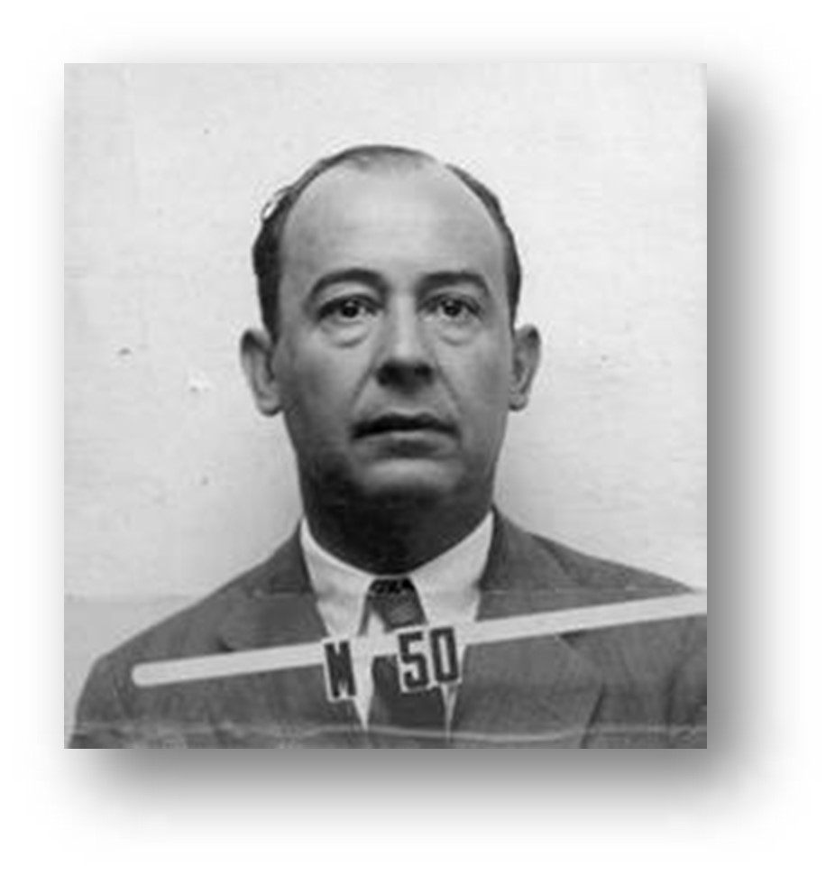

Nació en Estados Unidos el 8 de febrero de 1957, fue un matemático húngaro-estadounidense que realizó contribuciones fundamentales en física cuántica, análisis funcional, teoría de conjuntos, teoría de juegos, ciencias de la computación, economía, análisis numérico, cibernética, hidrodinámica, estadística y muchos otros campos. Se le considera uno de los matemáticos más importantes del siglo xx.
Neumann János Lajos nació en Budapest en 1903, cuando esta ciudad pertenecía al Imperio
austrohúngaro. Su padre, Max Neumann, era un banquero judío que se había casado con
Margaret Kann, hija de una familia adinerada de Pest. El padre de John, Max Neumann, recibió
el 20 de febrero de 1913 la nobleza húngara donada por el emperador Francisco José de
AustriaHungría. De esta manera, John, que en Hungría ya utilizaba la forma germanizada de su
nombre, solía presentarse como Johann von Neumann. Fue el mayor de tres hermanos y a los
diez años comenzó a estudiar en el Colegio Luterano de Budapest. Sus profesores se dieron
cuenta pronto de su talento y recomendaron que recibiera clases particulares de matemáticas,
impartidas por profesores universitarios.
John era un superdotado y ganó el premio Eötvös al mejor alumno del país en matemáticas y Luego, su enorme inteligencia se haría legendaria. El futuro Premio Nobel de Física Eugene Wigner fue compañero de colegio, una clase por encima de él. Sería su amigo toda la vida y las conversaciones que mantuvo con von Neumann en aquella época le disuadieron de dedicarse a las matemáticas: «Habiendo conocido a János von Neumann me di cuenta de la diferencia entre un matemático de primera fila y yo.
En 1919, al término de la Primera Guerra Mundial, su familia abandonó Hungría durante la época revolucionaria que culminó con el gobierno comunista de Béla Kun. A su vuelta, en 1921, John fue admitido en la Universidad de Budapest donde acabaría doctorándose en matemáticas en 1926. Al mismo tiempo estudiaba en Berlín, y recibió algunas clases de Albert Einstein, junto a otros compañeros húngaros como el mismo Wigner, Leó Szilárd y Dennis Gabor. Además, se matriculó en la Escuela Politécnica Federal de Zúrich, donde en 1925 obtuvo la licenciatura en ingeniería química y conoció a figuras como Hermann Weyl y George Pólya. Finalmente, también asistía a los seminarios de David Hilbert en Gotinga, donde coincidió con Robert Oppenheimer, con quien volvería a encontrarse en Princeton. A los 24 años se convirtió en Privatdozent de matemáticas en la universidad de Berlín.5 Es sumamente probable que ya en Gotinga, la meca de los matemáticos por aquel entonces, conociese a Norbert Wiener entre 1924 y 1926.
En 1929, la Universidad de Princeton ofreció a von Neumann y a Wigner una invitación para un semestre. Acudió allí acompañado de su novia Mariette Koevesi, con la que se casaría ese mismo año y tendría en 1935 una hija, Marina, que llegaría a ser una distinguida economista.6 Durante los años siguientes alternaba sus estancias entre Alemania y Estados Unidos, pero en 1933 la llegada de los nazis al poder hizo que los profesores judíos fuesen progresivamente expulsados de sus puestos. Von Neumann se encontró con la facilidad de estar ya establecido en los Estados Unidos y de que el Instituto de Estudios Avanzados de Princeton comenzó a funcionar ese mismo año, y fue elegido como uno de los primeros profesores junto con Albert Einstein, Oswald Veblen, Hermann Weyl y James W. Alexander.
Aunque llevaban una intensa vida social y su casa de Princeton era lugar de encuentro habitual para fiestas sociales, su relación matrimonial se fue deteriorando y, finalmente, acabó divorciándose de Mariette en 1937. Al año siguiente viajó a Europa y daba conferencias e intercambiaba ideas con científicos como Niels Bohr, con quien coincidió en Copenhague. Visitó también a su familia en Hungría y, antes de regresar a Estados Unidos, se casó con su amiga húngara Klara Dan.
Al año siguiente estalló la Segunda Guerra Mundial y el gobierno estadounidense puso en marcha el famoso Proyecto Manhattan, al que von Neumann se unió en 1943, junto con Eugene Wigner y Leó Szilárd, también húngaros exiliados. Su aportación más importante radicó en el diseño del método de implosión, utilizado en Alamogordo, la primera detonación de una bomba atómica de la historia, y que luego volvería a usarse en la de Nagasaki.9
Su aporte al programa atómico estadounidense terminó yendo mucho más allá de las contribuciones científicas. Leslie Groves, la máxima autoridad militar a cargo del Proyecto Manhattan, lo eligió como uno de los miembros del comité encargado de tomar decisiones estratégicas. Se mostró a favor de construir de la bomba de hidrógeno y de los misiles balísticos intercontinentales capaces de lanzarlas sobre la Unión Soviética, y participó activamente en su diseño. La primera explosión de una bomba H se produjo en un atolón del océano Pacífico en 1952.
de acuerdo con el modelo de Los elementos de Euclides, había alcanzado nuevos niveles de
rigor y envergadura a finales del siglo xix; particularmente en aritmética
(gracias a Richard Dedekind y Giuseppe Peano) y geometría (gracias a David Hilbert).
De cualquier manera, a comienzos del siglo xx, la teoría de conjuntos no había sido formalizada.
Esta nueva rama de las matemáticas había sido creada por Georg Cantor y puesta en crisis por
Bertrand Russell con el descubrimiento de su famosa paradoja sobre el conjunto de todos los
conjuntos que no pertenecen a sí mismos. La paradoja de Russell consistía en la observación de
que si el conjunto x (de todos los conjuntos que no son miembros de sí mismos) es un miembro de
sí mismo, entonces debe pertenecer al conjunto de los conjuntos que no pertenecen a sí mismos y,
por otra parte, si el conjunto x no pertenece a sí mismo, entonces debe pertenecer al conjunto
de los conjuntos que no pertenecen a sí mismos y, por lo tanto, debe pertenecer a sí mismo.
Una de sus famosas aportaciones a la Teoría de Números fue la definición de Número ordinal (teoría de conjuntos).
El problema de una axiomatización adecuada de la teoría de conjuntos fue implícitamente
resuelto, cerca de 20 años después, gracias a Ernst Zermelo y Abraham Fraenkel, por
medio de una serie de principios que permitieron la construcción de todos los conjuntos
utilizados en la práctica actual de las matemáticas, pero que explícitamente no excluía
doctoral de 1925, von Neumann demostró cómo era posible excluir esta posibilidad en dos
formas complementarias: el axioma de la fundación y la noción de clase.
El axioma de la fundación establecía que cada conjunto puede ser construido de abajo hacia
arriba, en una sucesión de pasos ordenada por medio de los principios de Zermelo y Fraenkel,
de tal manera que, si un conjunto pertenece a otro, entonces, necesariamente, el primero
conjunto pertenezca a sí mismo. Con el objetivo de demostrar que la adición de este nuevo
axioma a los otros no implicaba contradicciones, von Neumann introdujo un método de
demostración (llamado método de los modelos internos) que más tarde se convertiría en un
instrumento esencial de la teoría de conjuntos.
La segunda aproximación al problema toma como base la noción de clase y define un conjunto
como una clase que pertenece a otras clases, mientras una clase de propiedad se define como
una clase que no pertenece a otras clases. Mientras en la aproximación Zermelo/Fraenkel los
axiomas impiden la construcción de un conjunto de todos los conjuntos que no pertenecen a sí
mismos, en la aproximación de von Neumann la clase de todos los conjuntos que no pertenecen
a sí mismos puede ser construida pero es una clase de propiedad y no un conjunto.
Con esta contribución de von Neumann, el sistema axiomático de la teoría de conjuntos se
hizo completamente satisfactorio. La siguiente cuestión era si era o no definitivo y si no
estaba sujeto a mejoras. La contundente respuesta negativa la dio Kurt Gödel, cuando anunció,
en el histórico Congreso de Königsberg de septiembre de 1930, su famoso primer teorema de la
incompletitud: los sistemas axiomáticos usuales son incompletos, en el sentido de que no
pueden probar cada verdad que puede expresarse en su lenguaje. Este resultado fue lo
suficientemente innovador como para desconcertar a la mayoría de los matemáticos de aquella
época. Pero von Neumann, que había participado en el congreso, confirmó su fama de pensador
instantáneo y, en menos de un mes, estuvo en disposición de comunicarle a Gödel una
interesante consecuencia de su teorema: los sistemas axiomáticos usuales son incapaces de
demostrar su propia consistencia. Esta es, precisamente, la consecuencia que ha atraído la
el segundo teorema de Gödel, sin mención alguna a von Neumann.
En el Congreso Internacional de Matemáticos de 1900, David Hilbert presentó su famosa lista
de 23 problemas considerada central para el desarrollo de las matemáticas del nuevo siglo.
El sexto problema era la axiomatización de las teorías físicas. Entre las nuevas teorías
físicas del siglo, la única pendiente de recibir tal tratamiento a finales de la década de
1930 era la mecánica cuántica. De hecho, en ese momento, la mecánica cuántica se encontraba
en una condición de crisis de fundamentos, similar a la que pasó la teoría de conjuntos a
comienzos de siglo, enfrentando problemas tanto de naturaleza filosófica como técnica.
Por otra parte, su aparente indeterminismo no había sido reducido a una explicación de forma
determinista, como Albert Einstein creía que debía ser a fin de que la teoría se hiciera
satisfactoria y completa. Además, todavía existían dos formulaciones heurísticas distintas,
pero equivalentes: la supuesta mecánica matricial de Werner Heisenberg y la mecánica
ondulatoria de Erwin Schrödinger, pero todavía no había una formulación teórica unificada
satisfactoria.
Después de haber completado la axiomatización de la teoría de conjuntos, von Neumann empezó a enfrentarse a
la axiomatización de la mecánica cuántica. Inmediatamente, en 1926, comprendió que un sistema cuántico
al (N es el número de partículas, 3 coordenadas generales y 3 momentos canónicos para cada una)
de la mecánica clásica, pero con infinidad de dimensiones
(correspondiente a la infinidad de estados posibles del sistema) en su lugar. Entonces, las cantidades
de la física tradicional (es decir, posición y momento) podrían representarse como operadores lineales
particulares operando en esos espacios. Por consiguiente, la física de la mecánica cuántica se reducía
a las matemáticas de los operadores lineales hermitianos en los espacios de Hilbert. Por ejemplo, el
famoso principio de incertidumbre de Heisenberg, según el cual la determinación de la posición de una
partícula impide determinar su momento y viceversa, se traslada a la no conmutatividad de los dos
operadores correspondientes. Esta nueva formulación matemática incluía, como clases especiales, las
formulaciones tanto de Heisenberg como de Schrödinger y culminó en el clásico de 1932 Las
fundamentaciones matemáticas de la mecánica cuántica. Los matemáticos consideraron esta aproximación
como extremadamente elegante y satisfactoria. Pero, los físicos, en general, terminaron prefiriendo
otra aproximación diferente, formulada en 1930 por Paul Dirac y que se basaba en un extraño tipo de
función (la llamada delta de Dirac), severamente criticada por von Neumann.
De cualquier forma, el tratamiento abstracto de von Neumann también le permitió confrontar el
problema extremadamente profundo y fundamental del determinismo contra el no determinismo.
En su libro, demostró un teorema según el cual es imposible que la mecánica cuántica sea
derivada por aproximación estadística de una teoría determinista del mismo tipo que la utilizada
en mecánica clásica. Esta demostración contenía un error conceptual, pero ayudó a inaugurar
una línea de investigaciones que, gracias al trabajo de John Stuart Bell en 1964 sobre el
teorema de Bell y los experimentos de Alain Aspect en 1982, finalmente demostraron que la
física cuántica, en definitiva, requiere una noción de la realidad sustancialmente diferente
de la manejada en la física clásica.
En un trabajo complementario de 1936, von Neumann demostró, junto con Garret Birkhoff,
que la mecánica cuántica también requiere una lógica sustancialmente diferente de la lógica
clásica. Por ejemplo, la luz (los fotones) no puede pasar a través de dos filtros sucesivos
que estén polarizados perpendicularmente (por ejemplo, uno horizontal y el otro vertical).
Por eso, a fortiori, la luz no puede pasar si un tercer filtro, polarizado diagonalmente,
se agrega a los otros dos, ya sea antes o después de ellos en la sucesión. Pero si el tercer
filtro se coloca entre los otros dos, los fotones sí pasarán. Esta observación experimental
se traduce, en términos lógicos, como la no conmutatividad de la conjunción, es decir:
También se demostró que las leyes de distribución de la lógica clásica, y
no son válidas para la teoría cuántica. Esto se debe a que una disyunción cuántica, diferente
falsos y esto puede atribuirse, a su vez, al hecho de que es frecuente que ocurra,
en mecánica cuántica, que un par de alternativas sean semánticamente determinadas, mientras
cada uno de sus miembros son necesariamente indeterminados. Esta última propiedad puede
ilustrarse con un simple ejemplo. Supóngase que se está tratando con partículas
(como electrones) de espín (momento angular) semientero, por lo que sólo hay dos posibles
valores: positivo o negativo. Entonces, el principio de indeterminación establece que el
espín, relativo a dos direcciones diferentes (por ejemplo, x e y) da como resultado un par
de cantidades incompatibles. Supóngase que el estado de cierto electrón verifica la
proposición «el espín del electrón x es positivo». Por el principio de indeterminación,
el valor del espín en la dirección y será completamente indeterminado para . Entonces,
no puede verificar ni la proposición «el espín en la dirección de y es positivo» ni
la proposición «el espín en la dirección de y es negativo». Sin embargo, la disyunción
de la proposición «el espín en la dirección y es positivo o negativo» debe ser verdadera.
«El ajedrez no es un juego. El ajedrez es una forma bien definida de computación.
Puede que no te sea posible concebir las respuestas; pero en teoría debe existir
verdaderos no son así. La vida real no es así. La vida real consiste en farolear,
en tácticas pequeñas y astutas, en preguntarse uno mismo qué será lo que el otro
hombre piensa que yo intento hacer. Y en esto consisten los juegos en mi teoría».
Hasta la década de 1930, la economía parecía involucrar el uso de una gran cantidad de
matemáticas y números, pero casi todo era superficial o irrelevante. La economía se
utilizaba, sobre todo, para proveer, inútilmente, formulaciones precisas y soluciones
a problemas que de hecho eran intrínsecamente vagos. La economía se encontraba en un
estado similar al de la física del siglo xii: esperaba todavía el desarrollo de un
lenguaje apropiado a través del cual expresarse y resolver sus problemas.
Mientras la física, por supuesto, había encontrado su lenguaje en el cálculo
infinitesimal, von Neumann propuso el lenguaje de la teoría de juegos y la teoría del
equilibrio general para la economía.
Su primera contribución significativa fue el teorema minimax de 1928. Este teorema establece
que en ciertos juegos de suma cero, que involucran información perfecta
(esto es, cada jugador conoce de antemano la estrategia de su oponente y sus consecuencias),
existe una estrategia que permite a ambos jugadores minimizar su máxima pérdida
(de ahí el nombre «minimax»). En particular, cuando se examina cada posible estrategia,
un jugador debe considerar todas las respuestas posibles del jugador adversario y la
pérdida máxima que puede acarrear. El jugador juega, entonces, con la estrategia que da como
resultado la minimización de su máxima pérdida. Tal estrategia se llama óptima para ambos
jugadores sólo en caso de que sus minimaxes sean iguales (en valor absoluto) y contrarios
(en signo). Si el valor común es cero, el juego se convierte en un sinsentido.
Von Neumann finalmente perfeccionó y extendió el teorema minimax para incluir juegos que
involucran información imperfecta y juegos de más de dos jugadores. Este trabajo culminó
en el clásico de 1944 Theory of Games and Economic Behavior
(Teoría de juegos y comportamiento económico), escrito con Oskar Morgenstern.
La segunda contribución importante de von Neumann en esta área fue la solución, en 1937,
a un problema descrito por Léon Walras en 1874: la existencia de situaciones de
equilibrio en modelos matemáticos de desarrollo del mercado basado en oferta y demanda.
Primero reconoció que tal modelo tendría que expresarse por medio de inecuaciones y no de
ecuaciones (como solía hacerse), y entonces encontró la solución al problema de Walras
aplicando un teorema de punto fijo derivado del trabajo de Luitzen Brouwer. La importancia
perdurable del trabajo en equilibrio general y la metodología de los teoremas de punto
fijo es resaltada por la concesión del Premio Nobel, en 1972, a Kenneth Arrow y, en 1983,
a Gerard Debreu.
Von Neumann (junto con Morgenstern, en su libro de 1944) fue el primero en emplear el
método de prueba, utilizado en teoría de juegos, conocido como Inducción hacia atrás
(backward induction).
En 1937, habiendo obtenido recientemente su ciudadanía estadounidense, von Neumann
empezó a interesarse en problemas de matemática aplicada. Se convirtió rápidamente en
uno de los más grandes expertos en materia de explosivos y se comprometió con un gran
número de consultorías militares, principalmente para la Marina de Estados Unidos. En
1942 desarrolló una teoría sobre el proceso de detonación. Un resultado notable en el
campo de explosiones fue el descubrimiento de que las bombas de grandes dimensiones
son más devastadoras si se detonan antes de tocar el suelo, por la fuerza adicional
causada por las ondas de detonación (los medios mantuvieron, simplemente, que von
Neumann había descubierto que es mejor perder un objetivo que acertarlo). Lo cual
era lo opuesto al empleo operacional de las bombas más potentes utilizadas en ese
momento, las bombas terremoto, que se incrustaban en el suelo antes de explotar.
Las más famosas (o infames) aplicaciones de este descubrimiento ocurrieron el 6 y 9
de agosto de 1945, cuando dos proyectiles nucleares fueron detonados sobre Hiroshima
y Nagasaki, a la altitud precisa, calculada por el mismo von Neumann, con el objetivo
de que produjeran el mayor daño posible.
Von Neumann se incorporó al Proyecto Manhattan y su principal contribución fue el concepto
y el diseño de los explosivos de contacto necesarios para comprimir el núcleo de plutonio
de la primera detonación nuclear de la historia, la prueba Trinity, y de la bomba Fat
Man lanzada sobre Nagasaki.

Desde un punto de vista político, Von Neumann era un miembro del comité cuyo trabajo era
seleccionar «objetivos» potenciales. La primera elección de von Neumann, la ciudad de
Kioto, fue rechazada por el Secretario de la Guerra Henry Stimson.
Después de la guerra, Robert Oppenheimer había hecho notar que los físicos «habían conocido
el pecado» como resultado del desarrollo de las primeras bombas atómicas. La respuesta de
von Neumann, algo cínica, fue que «algunas veces alguien confiesa un pecado con el fin de
darse el crédito por él». En cualquier caso, continuó imperturbable en su trabajo, y
finalmente se convirtió, junto con Edward Teller, en uno de los más convencidos defensores
del proyecto de construcción de la bomba de hidrógeno. Von Neumann había colaborado con el
espía Klaus Fuchs en el desarrollo de la bomba de hidrógeno y los dos archivaron una
patente secreta sobre «mejora en métodos y medios para la utilización de energía nuclear»
en 1946, la cual esbozaba un esquema para el uso de la explosión de una bomba de fisión que
produjera la compresión de combustible de fusión necesaria para poder iniciar una reacción
termonuclear. Aunque el método escogido para el diseño final de la bomba de hidrógeno fue
el de Teller y Ulam, se reconoció posteriormente que fue un paso en la dirección correcta
hacia el logro de este.
El trabajo de Von Neumann en la bomba de hidrógeno se encontraba también en el dominio de
las nuevas calculadoras digitales de von Neumann para los cómputos hidrodinámicos
necesarios. Durante este tiempo contribuyó a desarrollar el método de Montecarlo, el
cual permitía la aproximación de problemas muy complicados a través del uso de números
aleatorios. Como utilizar listas de «verdaderos» números aleatorios era demasiado lento
para el ENIAC, Von Neumann elaboró una forma tosca de generar números pseudoaleatorios,
utilizando el método middle-square ('método del centro del cuadrado'). Aunque se ha
demostrado que este método no es fiable, Von Neumann era consciente de eso en aquel
entonces: lo justificó por ser más rápido, en términos de tiempo computacional, que
cualquier otro método a su disposición en ese momento, y también hizo notar que cuando
aquel fallaba lo hacía de manera muy obvia, no como otros métodos que podían ser
sutilmente incorrectos.
En 1952 la primera bomba de hidrógeno, Ivy Mike, fue detonada en el atolón de Enewetak.
Identificación de von Neumann en el Laboratorio Nacional Los ÁlamUna primera
implementación de la autorreproducción del constructor universal de Von Neumann.
Se muestran tres generaciones de máquina: la segunda casi ha terminado la construcción
de la tercera. Las líneas que corren a la derecha son las cintas de instrucciones
genéticas, que se copian junto con el cuerpo de las máquinas.
La máquina funcionando se muestra en una versión del autómata celular de von Neumann.
Von Neumann le dio su nombre a la arquitectura de von Neumann, utilizada en casi todos los
computadores, por su publicación del concepto; aunque muchos piensan que este
nombramiento ignora la contribución de J. Presper Eckert y John William Mauchly, quienes
contribuyeron al concepto durante su trabajo en ENIAC.16 Virtualmente, cada computador
personal, microcomputador, minicomputador y supercomputador es una máquina de von
Neumann. También creó el campo de los autómatas celulares sin computadores, construyendo
los primeros ejemplos de autómatas autorreplicables con lápiz y papel. El concepto de
constructor universal fue presentado en su trabajo póstumo Teoría de los autómatas
autorreproductivos. El término «máquina de von Neumann» se refiere alternativamente a
las máquinas autorreplicativas. Von Neumann probó que el camino más efectivo para las
operaciones mineras a gran escala, como minar una luna entera o un cinturón de
asteroides, es a través del uso de máquinas autorreplicativas, para aprovechar el
crecimiento exponencial de tales mecanismos.
Además de su trabajo en arquitectura computacional, von Neumann ofreció una contribución al
estudio de algoritmos. Donald Knuth considera a von Neumann el inventor, en 1945, del
conocido algoritmo merge sort, en el cual la primera y segunda mitad de un array (vector)
de von Neumman se publicó en 1946 con el desarrollo del primer algoritmo Generador de
números pseudoaleatorios conocido como Cuadrado Medio 17. A pesar de las debilidades del
algoritmo, influyó a otros grandes investigadores y cientistas en este campo de estudio en
la informática.
También participó en la investigación de problemas en el campo de la hidrodinámica numérica.
Junto con R. D. Richtmyer desarrolló un algoritmo para definir la viscosidad artificial,
que probó la esencia para el entendimiento de las ondas de choque. Puede decirse que sin ese
trabajo no sería posible entender mucho de astronáutica y ni siquiera podrían haberse
desarrollado los reactores y los motores espaciales. El problema era que cuando los
computadores resuelven problemas hidro o aerodinámicos, buscan poner muchos puntos de
rejilla (o malla, en inglés grid) computacionales en regiones con onda de choque de
discontinuidad aguda. La viscosidad artificial era un truco matemático para suavizar levemente
la transición del choque sin sacrificar la física básica.
Von Neumann desarrolló una carrera académica «relámpago» similar a la velocidad de su propio
intelecto, y obtuvo a los 29 años una de las primeras cinco plazas docentes en el recién creado
Instituto de Estudios Avanzados de Princeton (otra fue para Albert Einstein). Él parecía
obligado, entonces, a buscar otros campos de interés con el objetivo de satisfacer su ambiciosa
personalidad, y lo encontró en su colaboración con el complejo militarindustrial estadounidense.
Le consultaban con frecuencia la CIA, el ejército de los Estados Unidos, la Corporación RAND,
Standard Oil, IBM y otros.
Durante una audiencia del comité del senado, una vez describió su ideología política como
"violentamente anticomunista y mucho más militarista que la normal". Primero como
presidente del conocido Comité para Misiles de von Neumann y luego como miembro de la
restringida Comisión de Energía Atómica, desde 1953 hasta su muerte en 1957 él era el
científico con mayor poder político en Estados Unidos. A través de su comité, desarrolló
varios escenarios de proliferación nuclear, misiles submarinos e intercontinentales con
cabezas atómicas y el muy controvertido equilibrio estratégico llamado Destrucción
mutua asegurada (Destrucción mutuamente asegurada). En pocas palabras, era la mente
diestra de los aspectos científicos de la guerra fría que condicionó al mundo occidental
por cuarenta años.
Von Neumann siempre vestía un traje de negocios gris de franela, conservador. También se sabe
que para jugar al tenis iba vestido con su traje de negocios y que le gustaba organizar
grandes fiestas en su casa de Princeton, en ocasiones hasta dos veces por semana. A pesar
de conducir muy mal, le gustaba hacerlo (con frecuencia lo hacía mientras leía un libro),
y llegó a ocasionar numerosas detenciones y accidentes. En uno de ellos le dijo a la policía:
"Yo iba avanzando por el camino. Los árboles de la derecha me estaban pasando de manera
ordenada a 60 millas por hora. De repente uno de ellos se paró en mi camino".
John poseía memoria eidética: "One of his remarkable abilities was his power of absolute recall.
back verbatim; moreover, he could do it years later without hesitation". En una ocasión,
Stanislaw Ulam quiso poner a prueba la memoria de John y le preguntó si recordaba el principio
de Historia de dos ciudades, a lo que inmediatamente John, sin hacer pausa alguna, respondió
recitando el capítulo uno sin parar hasta que Ulam se lo pidió.
El Premio de Teoría John von Neumann del Instituto para la Investigación de Operaciones y la
Ciencia Administrativa se otorga anualmente al individuo o grupo que haya hecho
contribuciones fundamentales y sustentadas a la teoría en investigación de operaciones y las
ciencias administrativas.
La Medalla John von Neumann se otorga por la IEEE "para los logros excepcionales en ciencia
y tecnología de la computación".
La lectura de John von Neumann se presenta anualmente en la Society for Industrial and Applied
Mathematics (SIAM) (Sociedad para las Matemáticas Industriales y Aplicadas) por un
investigador que ha contribuido a las matemáticas aplicadas; el lector escogido es también
acreedor de un premio monetario.
Von Neumann es el nombre de un cráter de la Luna,19 y (22824) von Neumann el de un asteroide
bautizado así en su honor.
El Centro de Computación John von Neumann en Princeton, Nueva Jersey( 40.348695,-
74.592251) lleva su nombre.
El 15 de febrero de 1956 recibió la Medalla Presidencial de la Libertad de manos del presidente
Dwight Eisenhower.
El Premio John von Neumann de la Universidad László Rajk de Estudios Superiores honra su
memoria, y se entrega anualmente desde 1995 a los profesores que han tenido una destacada
contribución en el ámbito de las ciencias sociales y que, a través de su trabajo, han
tenido una gran influencia para el desarrollo profesional y el pensamiento de los miembros
de la universidad.
La sociedad profesional de científicos de la computación húngaros, Neumann János
Számítógéptudományi Társaság, también lleva su nombre.
El 4 de mayo de 2005 el Servicio Postal de los Estados Unidos publicó la serie de estampillas
conmemorativas Científicos Norteamericanos, una serie de cuatro estampillas autoadhesivas de
37 centavos de dólar en muchas configuraciones. Los científicos retratados fueron John von
Neumann, Barbara McClintock, Josiah Willard Gibbs y Richard Feynman.